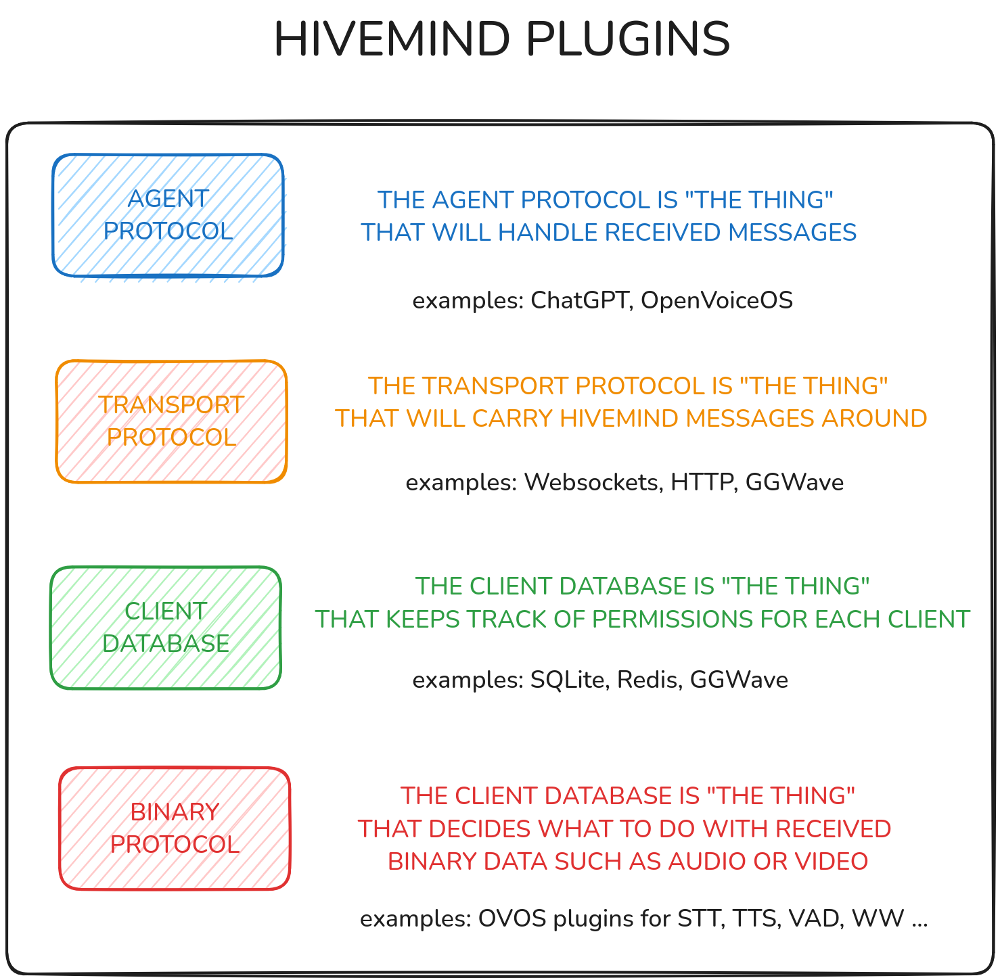

HiveMind Plugin Manager
The HiveMind Plugin Manager (HPM) is a system for discovering, managing, and loading plugins within the HiveMind ecosystem. It supports various plugin types, including databases, network protocols, agent protocols, and binary data handlers. HPM allows for dynamic integration of these plugins to enhance the functionality of HiveMind agents, offering a flexible and extensible architecture.
Features
- Plugin Discovery: Easily find and load plugins of different types, including:
- Database Plugins: Supports various database types such as JSON, SQLite, and Redis.
- Agent Protocol Plugins: Integrates agent protocols like OVOS and Persona, enabling seamless communication between HiveMind agents.
- Network Protocol Plugins: Enables network protocols such as WebSockets for distributed communication.
-
Binary Data Handler Plugins: Handle binary data communication, like audio data over HiveMind.
-
Plugin Loading: Dynamically load specific plugins by name, type, or from available entry points.
-
Factories for Plugin Instantiation: Factories for creating instances of each plugin type (database, agent protocol, network protocol, binary protocol) based on user configurations.
Plugin Types

1. Database Plugins
Supports multiple database systems, such as:
- JSON Database: Stores data in a JSON format.
- SQLite Database: Uses SQLite for local database storage.
- Redis Database: Uses Redis for distributed caching and storage.
2. Agent Protocol Plugins
Supports communication protocols for agents, such as:
- OVOS Protocol: For interaction with OVOS-based agents.
- Persona Protocol: For interaction with the Persona framework.
3. Network Protocol Plugins
Enables network communication protocols, such as:
- WebSocket Protocol: For real-time, bidirectional communication over WebSockets.
4. Binary Data Handler Protocol Plugins
Handles communication of binary data types, like audio, using specialized protocols.
Installation
hivemind-plugin-manager is a dependency of hivemind-core, you typically do not need to install it
pip install hivemind-plugin-manager
Developers
The following example demonstrates how to discover and load plugins, along with creating instances using the provided factories.
Discovering Plugins
Use the find_plugins function to discover all available plugins for a specific type:
from hivemind_plugin_manager import find_plugins, HiveMindPluginTypes
# Find all database plugins
database_plugins = find_plugins(HiveMindPluginTypes.DATABASE)
print(database_plugins)
# Find all agent protocol plugins
agent_protocol_plugins = find_plugins(HiveMindPluginTypes.AGENT_PROTOCOL)
print(agent_protocol_plugins)
Creating Plugin Instances
Each plugin type has a corresponding factory class that allows for creating plugin instances with the required configuration.
Database Plugin Factory
from hivemind_plugin_manager import DatabaseFactory
# Create an instance of a database plugin
db_instance = DatabaseFactory.create("hivemind-redis-db-plugin", password="Password1!", host="192.168.1.11", port=6789)
Agent Protocol Factory
from hivemind_plugin_manager import AgentProtocolFactory
# Create an agent protocol instance
agent_protocol_instance = AgentProtocolFactory.create("hivemind-ovos-agent-plugin")
Network Protocol Factory
from hivemind_plugin_manager import NetworkProtocolFactory
# Create a network protocol instance
network_protocol_instance = NetworkProtocolFactory.create("hivemind-websocket-plugin")
Binary Data Handler Protocol Factory
from hivemind_plugin_manager import BinaryDataHandlerProtocolFactory
# Create a binary data handler protocol instance
binary_data_handler_instance = BinaryDataHandlerProtocolFactory.create("hivemind-audio-binary-protocol-plugin")